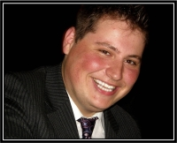
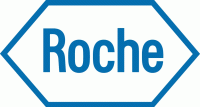
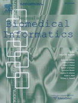

ISMB/ECCB-2011 - Awards
Ian Lawson Van Toch Memorial Award
 The Outstanding Student Paper Award is given to the student who presents the most thought-provoking or original paper at the Conference, as judged by our panel of experts.

JBI (Journal of Biomedical Informatics) editorial board members in attendance at the ISMB meeting will serve as the selection committee for the JBI Award for Best Paper in Translational Bioinformatics. The finalists' papers will be identified by the selection committee in consultation with the Chair of the ISMB Scientific Program Committee, and will be announced at the end of the meeting.
The selection of the winning paper will be based on the written quality of the paper, the research described, and the oral presentation at the meeting. JBI is interested in encouraging, publishing, and rewarding papers in Translational Bioinformatics that correspond to the journal’s emphasis on innovative methodology and on the relevance of the work to human disease and its diagnosis, prognosis, treatment, or prevention. The editorial describes JBI's emphasis on this area of bioinformatics, which has been in effect since July 2009. Authors of the award winning paper will receive a certificate and a $250.00 cash award. Authors will also be invited to expand their paper for submission and possible publication in the Journal of Biomedical Informatics.
The RCSB PDB Poster Prize will be awarded for the best student poster presentation in the category of Structure and Function Prediction. The award will consist of a related educational book.
|
19th Annual International Conference on
Intelligent Systems for Molecular Biology and
10th European Conference on Computational Biology
Intelligent Systems for Molecular Biology and
10th European Conference on Computational Biology